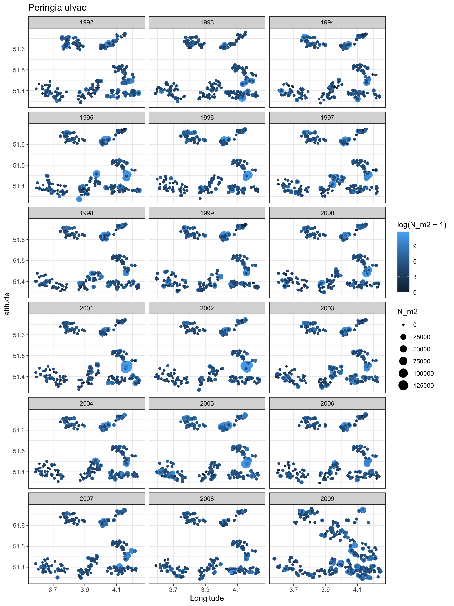
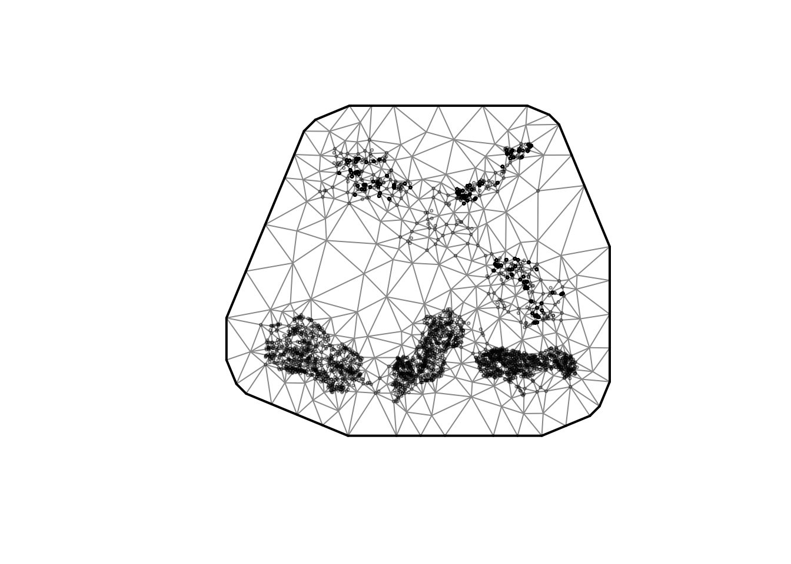
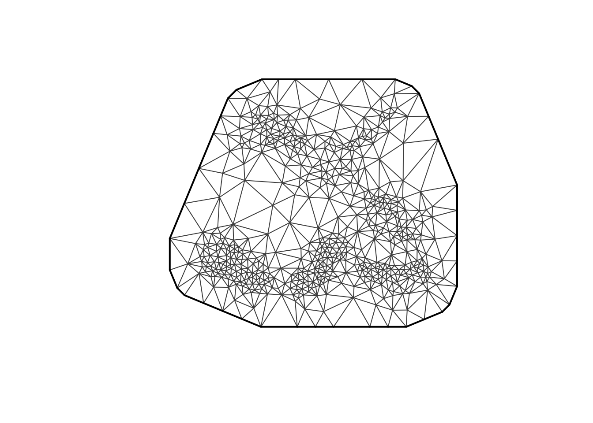
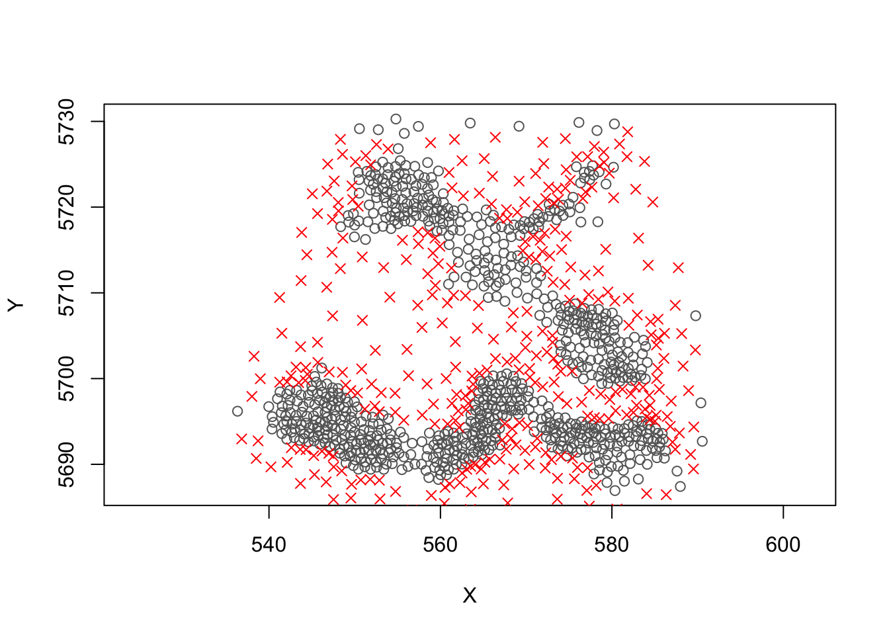
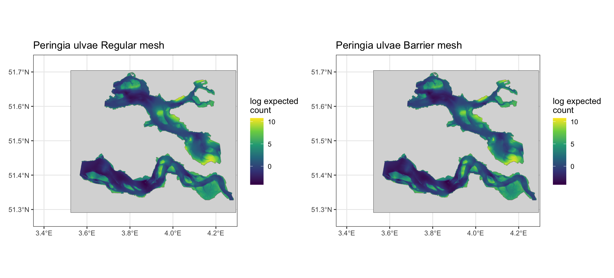

# Settings
crs_chosen = 4326 #WGS84
Species_chosen = c( "Peringia ulvae","Corophium volutator", #littoral species
"Pygospio elegans","Heteromastus filiformis" #sublittoral species
)[1]
Season_chosen = "nj" # focus on najaar (autumn)
Year_end = 2009 #sampling design changed in 2009 Barrier_Exercise_MWTL
To Do:
- Empty stations need to be filled
- Grevelingen stations need to be removed
Case study: shellfish in two tidal inlets separated by a barrier (MWTL survey)
The Oosterschelde and Westerschelde are two adjacent tidal systems in the Dutch Delta. Although they are spatially close, they are physically separated by land so spatial correlation in benthos density should not flow freely across the peninsula, even where two sampling points are close in straight-line distance. This case study tests whether encoding that barrier in the spatial mesh improves a species distribution model.
This version uses the MWTL macrozoobenthos survey (MWTL_MZB) instead of the WOT shellfish survey. The MWTL survey is not restricted to mudflats, so it should sample a broader range of the study area. We model density (N_m2) rather than raw counts, using a Tweedie family.
We fit two otherwise-identical sdmTMB models: one on a regular SPDE mesh and one on a barrier mesh, and compare.
0. Information on Survey:
Settings
Load libraries
x <- c("ggplot2", "tidyverse", "vegan", "sf", "raster", "terra", "tidyterra","glmmTMB",
"dplyr", "tidyr", "sdmTMB", "sdmTMBextra", "DHARMa", "patchwork")
invisible(lapply(x, require, character.only = TRUE))
#Set Theme
theme_set(theme_bw())
#Directories
path <- getwd()
pathfigures <- paste0(path,"/Fig")0.1 Read Survey data
Read the Oosterschelde and Westerschelde MWTL survey files separately, then merge.
Columnnames key: - Valid_name = accepted species name - N_m2 = density per m2 - N = raw count - Oppervlakte_m2 = sampled area - Tuig = gear - Seizoen = season (vj / nj) - StationID = station identifier - Dvd = emersion time (extracted, not measured during survey) - EvMax = Maximum flow velocity (extracted, not measured during survey)
#Oosterschelde
df_MWTL_OS <- read_csv(paste0(path, "/data/SpeciesData/BenthosSurvey/mwtl_os.csv")) %>% # <<< set filename
dplyr::mutate(StationID = as.character(StationID)) %>%
dplyr::mutate(Systeem = "Oosterschelde")
#Westerschelde
#cutting off the Waddensea samples (same survey but not part of the case study)
df_MWTL_WS <- read_csv(paste0(path, "/data/SpeciesData/BenthosSurvey/mwtl_ws.csv")) %>% # <<< set filename
dplyr::filter(Y < 52.0) %>% # Y is Latitude in this file
dplyr::mutate(StationID = as.character(StationID)) %>%
dplyr::mutate(Systeem = "Westerschelde")
#Merge the two systems
df_MWTL <- dplyr::bind_rows(df_MWTL_OS, df_MWTL_WS)
# Rename to neutral internal names so the rest of the script is stable.
# (Longitude/Latitude kept as explicit columns; X/Y get reused later for UTM.)
df_MWTL <- df_MWTL %>%
dplyr::rename(
Longitude = X,
Latitude = Y,
dvd = Dvd,
evmax = Evmax
)
#Merge sampling gears into coarse classes (adjust to the gear codes actually present)
df_MWTL <- df_MWTL %>%
mutate(
Tuig = dplyr::case_when(
Tuig %in% c("STEEKBS", "Steekbuis", "steekbuis (pvc-buis)") ~ "Steekbuis",
Tuig %in% c("BOXCORE", "Boxcorer") ~ "Boxcore",
TRUE ~ "Overig"
),
Tuig = factor(Tuig)
) %>%
dplyr::filter(Projecten == "MWTL_MZB") %>% # keep only the MWTL macrozoobenthos project
dplyr::filter(Seizoen == Season_chosen) # focus on nj
#End at selected year (in case you want it up until the survey design change in 2009 (set in settings in first section))
df_MWTL <- df_MWTL %>% dplyr::filter(Year <= Year_end)
#Turn it into a spatial object
df_MWTL_sf <- st_as_sf(df_MWTL, coords = c("Longitude","Latitude"),
crs = crs_chosen, remove = FALSE)0.2 Read Env data
The main covariate is emersion time (DVD -> Droogvalduur (Dutch)), supplied as rasters per system. We reproject both to WGS84, merge them, and load the land barrier shapefile (cropped to the study extent) for use in plotting and in the barrier mesh.
#Emersion time (Unit is percentage % of time emerged)
dvd_OS <- terra::rast(paste0(path, "/Data/EnvironData/Rasters_EmersionTimes", "/edvd_os_2021.tif"))
dvd_WS <- terra::rast(paste0(path, "/Data/EnvironData/Rasters_EmersionTimes", "/edvd_ws_2022.tif"))
#Flow Velocity (Unit is m/sec)
#convert from rd new to wgs84
dvd <- terra::merge(terra::sprc(dvd_OS, dvd_WS))
dvd <- terra::project(dvd, "EPSG:4326", method = "bilinear")
# Create breaks
breaks <- c(0,5,10,15,20,25,30,35,40,45,50,60,70,80,90,100)
#Flow Velocity (Unit is m/sec)
evmax_OS <- terra::rast(paste0(path, "/Data/EnvironData/Rasters_EvMax", "/evmax_os_2021.tif"))
evmax_OS <- terra::resample(evmax_OS, dvd_OS, method = "bilinear") # align grids
evmax_OS <- terra::mask(evmax_OS, dvd_OS)
evmax_WS <- terra::rast(paste0(path, "/Data/EnvironData/Rasters_EvMax", "/evmax_ws_2022.tif"))
evmax_WS <- terra::resample(evmax_WS, dvd_WS, method = "bilinear")
evmax_WS <- terra::mask(evmax_WS, dvd_WS)
#convert from rd new to wgs84
ev_max <- terra::merge(terra::sprc(evmax_OS, evmax_WS))
ev_max <- terra::project(ev_max, "EPSG:4326", method = "bilinear")
#very important step I forgot!
ev_max <- ev_max/100
#Barrier_Shapefile -> this marks the tidal flats as barriers and that is not what we want
Barrier <- st_read(paste0(path, "/Data/EnvironData/Shapefile_Boundary", "/Nederland.shp")) Reading layer `Nederland' from data source
`/Users/aliciahamer/Library/CloudStorage/OneDrive-WageningenUniversity&Research/20xx_Overige Projecten/Curssussen/WKFISHDISH/Tor B - SDM methodology and good practices/Theme-2/CaseStudy_Barrier/sdm-barrier/Data/EnvironData/Shapefile_Boundary/Nederland.shp'
using driver `ESRI Shapefile'
Simple feature collection with 37 features and 4 fields
Geometry type: MULTIPOLYGON
Dimension: XY
Bounding box: xmin: 524976.5 ymin: 5626017 xmax: 782918.9 ymax: 5939887
CRS: NAst_crs(Barrier) <- 32631
Barrier <- st_transform(Barrier, crs_chosen)
#Cut it
Barrier <- st_geometry(Barrier)
Barrier <- st_make_valid(Barrier)
Barrier <- st_crop(Barrier, c(xmin = 3.35, ymin = 51.25, xmax = 4.30, ymax = 51.75))
#Construct barrier from Emersion time (dvd) grid layer
land_rast <- terra::ifel(is.na(dvd), 1, NA) # 1 where dvd is NA (= land), NA elsewhere
land <- terra::as.polygons(land_rast) # polygon of the land
land <- sf::st_as_sf(land) # to sf, inherits dvd's CRS (4326)
land <- sf::st_make_valid(land)
#plot(sf::st_geometry(land), col = "tomato", border = "grey40")
Barrier <- land
rm(list = setdiff(ls(), c("df_MWTL", "df_MWTL_sf", #data
"Barrier", "dvd", "ev_max", #spatial data
"path", "pathfigures", #paths
"Species_chosen", "Surveyx", "breaks" #settings
)))1. Area description
1.1 Area description - Spatially
The westerschelde is more dynamic (larger flow velocities) and has a salinity gradient, the oosterschelde is less dynamic and no salinity gradient. Both are tidal systems.
The map below shows the emersion-time surface, the land barrier separating the two inlets, and the survey stations coloured by sampling gear.

1.2 Area description - Table
| Year | Oosterschelde | Westerschelde |
|---|---|---|
| 1992 | 120 | 120 |
| 1993 | 120 | 120 |
| 1994 | 120 | 120 |
| 1995 | 120 | 120 |
| 1996 | 120 | 120 |
| 1997 | 120 | 120 |
| 1998 | 120 | 120 |
| 1999 | 120 | 120 |
| 2000 | 120 | 120 |
| 2001 | 120 | 120 |
| 2002 | 120 | 120 |
| 2003 | 120 | 120 |
| 2004 | 120 | 120 |
| 2005 | 119 | 120 |
| 2006 | 120 | 120 |
| 2007 | 120 | 120 |
| 2008 | 120 | 120 |
| 2009 | 128 | 194 |
| Systeem | n | dvd_mean | dvd_sd | evmax_mean | evmax_sd |
|---|---|---|---|---|---|
| Oosterschelde | 2149 | 11.24 | 21.05 | 0.52 | 0.30 |
| Westerschelde | 2233 | 17.34 | 27.51 | 0.97 | 0.46 |
1.3 Look at species’ distribution over years
See where species is located per year and if this changes

2. Model
Prepare data for model
# One row per event, carrying the covariates/metadata
events <- df_MWTL %>%
group_by(event_id) %>%
dplyr::summarise(
Year = first(Year),
Longitude = first(Longitude),
Latitude = first(Latitude),
dvd = first(dvd),
evmax = first(evmax),
Tuig = first(Tuig),
Seizoen = first(Seizoen),
Systeem = first(Systeem),
.groups = "drop"
)
# Density of the chosen species per event (from N_m2)
sp_density <- df_MWTL %>%
dplyr::filter(Valid_name == Species_chosen) %>%
group_by(event_id) %>%
dplyr::summarise(density = sum(N_m2, na.rm = TRUE), .groups = "drop")
dat <- events %>%
left_join(sp_density, by = "event_id") %>%
mutate(density = ifelse(is.na(density), 0, density)) # true absences -> 0 density
cat("Events with species present:", sum(dat$density > 0),
" | absences:", sum(dat$density == 0), "\n")Events with species present: 834 | absences: 3567 dat <- dat %>%
filter(!is.na(dvd), !is.na(evmax),
!is.na(Longitude), !is.na(Latitude)) %>%
mutate(
dvd_s = as.numeric(scale(dvd)),
evmax_s = as.numeric(scale(evmax)),
gear = factor(Tuig),
fYear = factor(Year)
)
## Project lon/lat -> metric CRS (UTM 31N) so mesh & range are in km.
dat <- add_utm_columns(dat, ll_names = c("Longitude", "Latitude"),
utm_crs = 32631) # adds X, Y (km)2.1 Constructing a Barrier Mesh
Build a regular SPDE mesh first, then derive a barrier mesh from it by passing the land polygon to add_barrier_mesh(). The range_fraction shrinks the spatial range across the barrier (lower = stronger barrier), so correlation no longer leaks across land.
#regular mesh
mesh <- sdmTMB::make_mesh(dat, xy_cols = c("X", "Y"), cutoff = 0.75)
plot(mesh); cat("Mesh vertices:", mesh$mesh$n, "\n")
Mesh vertices: 582 plot(mesh$mesh, main = "Regular mesh", asp = 1)
Barrier <- sf::st_sf(geometry = sf::st_geometry(Barrier))
Barrier_km <- sf::st_transform(Barrier, 32631) # metres
sf::st_geometry(Barrier_km) <- sf::st_geometry(Barrier_km) * 1e-3 # -> km to match mesh X/Y
sf::st_crs(Barrier_km) <- NA
#barrier mesh
barrier_mesh <- sdmTMBextra::add_barrier_mesh(
spde_obj = mesh,
barrier_sf = Barrier_km,
range_fraction = 0.2,
proj_scaling = 1,
plot = TRUE
)
#plot(barrier_mesh$mesh, main = "Barrier mesh")2.2 Fitting the models
fit_plain <- sdmTMB(
density ~ poly(dvd_s, 2) + poly(evmax_s, 2) + fYear,
data = dat,
mesh = mesh,
family = tweedie(link = "log"),
spatial = "on"
)
fit_barrier <- sdmTMB(
density ~ poly(dvd_s, 2) + poly(evmax_s, 2) + fYear,
data = dat,
mesh = barrier_mesh,
family = tweedie(link = "log"),
spatial = "on"
)2.3 Setting up Prediction grid
# Coarsen the emersion raster a little so prediction is quick,
# --- dvd grid
dvd_coarse <- terra::aggregate(dvd, fact = 4, fun = "mean", na.rm = TRUE)
grid <- terra::as.data.frame(dvd_coarse, xy = TRUE, na.rm = TRUE)
names(grid)[3] <- "dvd"
# --- pull evmax
evmax_coarse <- terra::resample(ev_max, dvd_coarse, method = "bilinear")
grid$evmax <- terra::extract(evmax_coarse,
grid[, c("x", "y")])[, 2]
# drop cells where evmax is missing and filter out subtidal area for prediction grid -> not sure is this is best practice
grid <- grid[!is.na(grid$evmax), ]
#grid <- grid[grid$dvd > 0 & grid$dvd < 97, ] #not sure if neccesary
# --- scale BOTH using the fitting means/sds ---
dvd_mean <- mean(dat$dvd, na.rm = TRUE); dvd_sd <- sd(dat$dvd, na.rm = TRUE)
evmax_mean <- mean(dat$evmax, na.rm = TRUE); evmax_sd <- sd(dat$evmax, na.rm = TRUE)
grid <- grid %>%
dplyr::rename(Longitude = x, Latitude = y) %>%
dplyr::mutate(
dvd_s = (dvd - dvd_mean) / dvd_sd,
evmax_s = (evmax - evmax_mean) / evmax_sd
)
# gear still held at reference level
grid$gear <- factor(levels(dat$gear)[1], levels = levels(dat$gear))
prediction_year <- 2009
grid$fYear <- factor(prediction_year, levels = levels(dat$fYear))
grid <- add_utm_columns(grid, ll_names = c("Longitude", "Latitude"),
utm_crs = 32631)
cat("Prediction cells:", nrow(grid), "\n")Prediction cells: 87622 3. Comparison
3.1 Performance
sanity(fit_plain)
sanity(fit_barrier)
print(fit_plain)Spatial model fit by ML ['sdmTMB']
Formula: density ~ poly(dvd_s, 2) + poly(evmax_s, 2) + fYear
Mesh: mesh (isotropic covariance)
Data: dat
Family: tweedie(link = 'log')
Conditional model:
coef.est coef.se
(Intercept) 1.65 0.38
poly(dvd_s, 2)1 92.11 8.47
poly(dvd_s, 2)2 -25.46 4.45
poly(evmax_s, 2)1 -56.48 12.75
poly(evmax_s, 2)2 14.85 7.50
fYear1993 0.26 0.28
fYear1994 0.49 0.28
fYear1995 1.27 0.27
fYear1996 0.97 0.27
fYear1997 0.99 0.27
fYear1998 0.57 0.28
fYear1999 0.36 0.29
fYear2000 0.89 0.27
fYear2001 1.48 0.26
fYear2002 1.52 0.26
fYear2003 1.03 0.27
fYear2004 0.30 0.28
fYear2005 1.63 0.26
fYear2006 1.29 0.26
fYear2007 0.42 0.28
fYear2008 -0.50 0.31
fYear2009 -0.13 0.29
Dispersion parameter: 63.12
Tweedie p: 1.55
Matérn range: 2.86
Spatial SD: 2.49
ML criterion at convergence: 8316.410
See ?tidy.sdmTMB to extract these values as a data frame.print(fit_barrier)Spatial model fit by ML ['sdmTMB']
Formula: density ~ poly(dvd_s, 2) + poly(evmax_s, 2) + fYear
Mesh: barrier_mesh (isotropic covariance)
Data: dat
Family: tweedie(link = 'log')
Conditional model:
coef.est coef.se
(Intercept) 1.81 0.37
poly(dvd_s, 2)1 93.73 8.58
poly(dvd_s, 2)2 -24.71 4.47
poly(evmax_s, 2)1 -57.23 13.12
poly(evmax_s, 2)2 14.37 7.66
fYear1993 0.30 0.28
fYear1994 0.57 0.28
fYear1995 1.33 0.27
fYear1996 1.03 0.27
fYear1997 1.03 0.27
fYear1998 0.62 0.28
fYear1999 0.41 0.29
fYear2000 0.94 0.28
fYear2001 1.53 0.26
fYear2002 1.58 0.26
fYear2003 1.09 0.27
fYear2004 0.36 0.29
fYear2005 1.70 0.26
fYear2006 1.33 0.26
fYear2007 0.48 0.28
fYear2008 -0.44 0.31
fYear2009 -0.13 0.29
Dispersion parameter: 63.23
Tweedie p: 1.55
Matérn range: 2.93
Spatial SD: 2.28
ML criterion at convergence: 8328.083
See ?tidy.sdmTMB to extract these values as a data frame.# AIC
AIC(fit_plain, fit_barrier) df AIC
fit_plain 26 16684.82
fit_barrier 26 16708.17#DHARMa residuals
s1 <- simulate(fit_plain, nsim = 300, type = "mle-mvn")
s2 <- simulate(fit_barrier, nsim = 300, type = "mle-mvn")
r1 <- dharma_residuals(s1, fit_plain, return_DHARMa = TRUE)
r2 <- dharma_residuals(s2, fit_barrier, return_DHARMa = TRUE)
#DHARMa::testResiduals(r1)
#DHARMa::testResiduals(r2)
#DHARMa::testSpatialAutocorrelation(r1, x = dat$X, y = dat$Y)
#DHARMa::testSpatialAutocorrelation(r2, x = dat$X, y = dat$Y)
#S
tidy(fit_plain, "ran_pars", conf.int = TRUE)# A tibble: 4 × 5
term estimate std.error conf.low conf.high
<chr> <dbl> <dbl> <dbl> <dbl>
1 range 2.86 0.505 2.03 4.05
2 phi 63.1 2.74 58.0 68.7
3 sigma_O 2.49 0.200 2.13 2.91
4 tweedie_p 1.55 0.00811 1.53 1.56tidy(fit_barrier, "ran_pars", conf.int = TRUE)# A tibble: 4 × 5
term estimate std.error conf.low conf.high
<chr> <dbl> <dbl> <dbl> <dbl>
1 range 2.93 0.415 2.22 3.87
2 phi 63.2 2.75 58.1 68.9
3 sigma_O 2.28 0.184 1.95 2.67
4 tweedie_p 1.55 0.00813 1.53 1.563.2 Prediction
pred_plain <- predict(fit_plain, newdata = grid)
pred_barrier <- predict(fit_barrier, newdata = grid)
pred_plain$density <- exp(pred_plain$est)
pred_barrier$density <- exp(pred_barrier$est)3.3 Conditional effects
Can’t get these to work when rendering :(
#these can take a bit to load
visreg::visreg(fit_plain, "dvd_s")
visreg::visreg(fit_plain, "evmax_s")
#ggeffects::ggeffect(fit_plain, "dvd_s [0:10 by=1]") %>% plot()
print(plot(PartDvd))
#print(PartEvmax)
3.4 Spatial prediction plots
zlim <- range(c(pred_plain$est, pred_barrier$est), na.rm = TRUE)
base_map <- function(df, title) {
ggplot(df, aes(Longitude, Latitude, fill = est)) +
geom_sf(data = Barrier, fill = "grey85", colour = "grey40",
linewidth = 0.2, inherit.aes = FALSE) +
geom_raster() +
scale_fill_viridis_c(name = "log expected\ncount",
limits = zlim) +
coord_sf(xlim = c(3.35, 4.30), ylim = c(51.25, 51.75), expand = FALSE) +
labs(title = title, x = NULL, y = NULL) +
theme_bw()
}
p_plain <- base_map(pred_plain, paste0(Species_chosen, " Regular mesh"))
p_barrier <- base_map(pred_barrier, paste0(Species_chosen, " Barrier mesh"))
library(patchwork)
p_plain + p_barrier
print(fit_plain)Spatial model fit by ML ['sdmTMB']
Formula: density ~ poly(dvd_s, 2) + poly(evmax_s, 2) + fYear
Mesh: mesh (isotropic covariance)
Data: dat
Family: tweedie(link = 'log')
Conditional model:
coef.est coef.se
(Intercept) 1.65 0.38
poly(dvd_s, 2)1 92.11 8.47
poly(dvd_s, 2)2 -25.46 4.45
poly(evmax_s, 2)1 -56.48 12.75
poly(evmax_s, 2)2 14.85 7.50
fYear1993 0.26 0.28
fYear1994 0.49 0.28
fYear1995 1.27 0.27
fYear1996 0.97 0.27
fYear1997 0.99 0.27
fYear1998 0.57 0.28
fYear1999 0.36 0.29
fYear2000 0.89 0.27
fYear2001 1.48 0.26
fYear2002 1.52 0.26
fYear2003 1.03 0.27
fYear2004 0.30 0.28
fYear2005 1.63 0.26
fYear2006 1.29 0.26
fYear2007 0.42 0.28
fYear2008 -0.50 0.31
fYear2009 -0.13 0.29
Dispersion parameter: 63.12
Tweedie p: 1.55
Matérn range: 2.86
Spatial SD: 2.49
ML criterion at convergence: 8316.410
See ?tidy.sdmTMB to extract these values as a data frame.print(fit_barrier)Spatial model fit by ML ['sdmTMB']
Formula: density ~ poly(dvd_s, 2) + poly(evmax_s, 2) + fYear
Mesh: barrier_mesh (isotropic covariance)
Data: dat
Family: tweedie(link = 'log')
Conditional model:
coef.est coef.se
(Intercept) 1.81 0.37
poly(dvd_s, 2)1 93.73 8.58
poly(dvd_s, 2)2 -24.71 4.47
poly(evmax_s, 2)1 -57.23 13.12
poly(evmax_s, 2)2 14.37 7.66
fYear1993 0.30 0.28
fYear1994 0.57 0.28
fYear1995 1.33 0.27
fYear1996 1.03 0.27
fYear1997 1.03 0.27
fYear1998 0.62 0.28
fYear1999 0.41 0.29
fYear2000 0.94 0.28
fYear2001 1.53 0.26
fYear2002 1.58 0.26
fYear2003 1.09 0.27
fYear2004 0.36 0.29
fYear2005 1.70 0.26
fYear2006 1.33 0.26
fYear2007 0.48 0.28
fYear2008 -0.44 0.31
fYear2009 -0.13 0.29
Dispersion parameter: 63.23
Tweedie p: 1.55
Matérn range: 2.93
Spatial SD: 2.28
ML criterion at convergence: 8328.083
See ?tidy.sdmTMB to extract these values as a data frame.#nice to hear our sampling effore is good enough to .. although MWTL is not every year so sruely if you want to get temproal shifts in distribution it could cause issues? Reccomendations
The DFS data could be added to explore if mesh/barrier mesh shows a difference in fish species, maybe moving species could react differently?
Or would a fish survey run against the same problems?